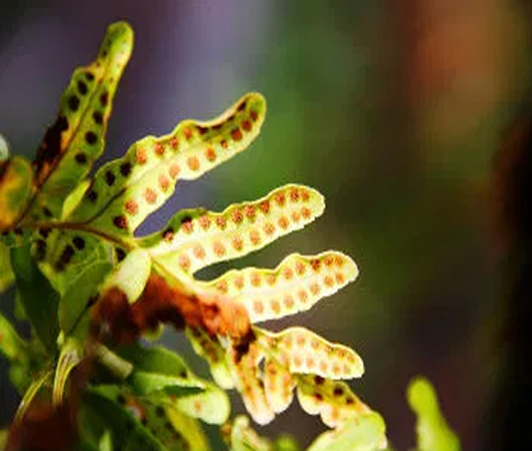
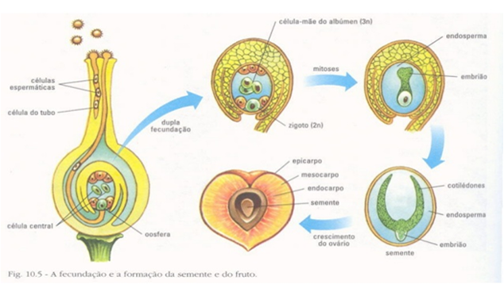
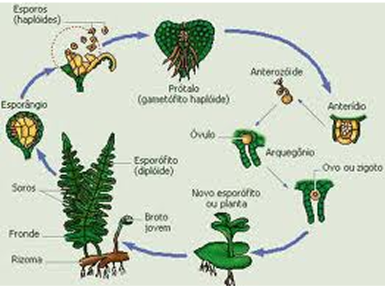
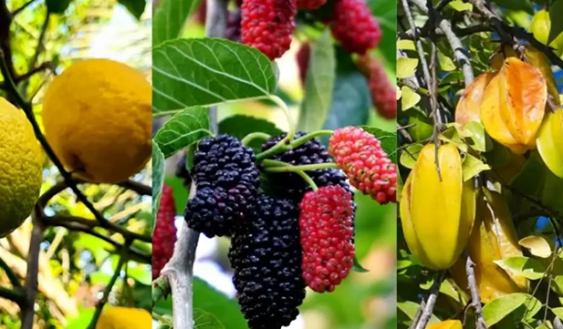

Na reprodução assexuada, uma nova planta se desenvolve a partir de partes da planta-mãe, como caule, folha ou tubérculo, por meio da propagação vegetativa. Nesse processo, não há fusão de gametas nem troca de material genético, fazendo com que a planta-filho seja geneticamente idêntica à planta original.
Esse tipo de reprodução é bastante comum em várias espécies vegetais e pode ocorrer através de diferentes estruturas, como esporos, brotos laterais, folhas ou tubérculos. Um exemplo bem conhecido é a batata, que utiliza tubérculos para formar novas plantas.

A reprodução assexuada permite uma multiplicação rápida e eficiente, garantindo a preservação das características genéticas da planta-mãe e facilitando a propagação em ambientes favoráveis.

Os esporos são estruturas muito pequenas, produzidas por algumas plantas, como as samambaias e os musgos, durante a reprodução assexuada. Eles não têm reservas de nutrientes, ou seja, não carregam alimento suficiente para se desenvolverem sozinhos por muito tempo.
Por isso, para que consigam germinar e crescer, os esporos precisam cair em um ambiente com condições favoráveis, como umidade, luz adequada e solo rico em nutrientes. Se essas condições não forem boas, os esporos podem acabar morrendo antes de se desenvolverem em uma nova planta.

As folhas também podem participar da reprodução assexuada em algumas plantas, especialmente nas briófitas, como musgos e hepáticas. As bordas das folhas possuem pequenas gemas que podem se desenvolver em uma nova planta.
Quando a folha se solta e cai em um local adequado, essas gemas crescem e formam um novo indivíduo, sem precisar de sementes. Essa forma de reprodução facilita a rápida multiplicação e a expansão dessas plantas em diferentes ambientes.
Na reprodução sexuada, uma nova planta se desenvolve a partir da união de células reprodutivas – o gameta masculino (presente no pólen) e o gameta feminino (presente no óvulo). Esse tipo de reprodução envolve troca de material genético, o que garante variabilidade genética entre os indivíduos da mesma espécie.
Esse processo é característico das plantas com flores, como as angiospermas e gimnospermas. Após a fecundação, o óvulo se transforma em semente, e o ovário da flor pode originar o fruto, que protege e ajuda a dispersar a semente.
A reprodução sexuada é importante para a evolução das espécies, pois permite o
surgimento de plantas com características diferentes, que podem ser mais resistentes
a
doenças
ou melhor adaptadas ao ambiente.


A fecundação nas plantas depende da polinização, que é o transporte do pólen das estruturas masculinas para as femininas. Esse transporte pode ser feito por vento, água, insetos, aves ou outros animais.
A polinização pode ser:
Depois da fecundação, a semente começa a se formar e carrega o embrião da nova planta. As sementes têm reserva de nutrientes para sustentar o embrião até que ele possa crescer sozinho.
Os frutos, formados a partir do ovário da flor, ajudam na proteção e dispersão das sementes. Animais, vento e água são meios comuns para espalhar as sementes pelo ambiente, facilitando a colonização de novos lugares.


A reprodução sexuada é essencial para manter o equilíbrio ecológico e a diversidade vegetal.
Além disso, ela é fundamental na agricultura, pois permite o melhoramento genético das plantas cultivadas, resultando em sementes mais produtivas e resistentes.
Após a fecundação na reprodução sexuada das plantas, ocorrem transformações importantes na flor. O gameta masculino, presente no pólen, se une ao gameta feminino, localizado no óvulo. Com isso, o óvulo fecundado se desenvolve e origina a semente, que abriga o embrião da nova planta.
Enquanto isso, o ovário da flor se transforma em fruto, envolvendo e protegendo a semente. Esse fruto pode ter diferentes formas, tamanhos e estruturas, e sua principal função é proteger e auxiliar na dispersão da semente, seja pelo vento, água ou animais.
Esse processo garante que a nova planta tenha mais chances de se desenvolver em
um ambiente adequado, contribuindo para a multiplicação e diversidade das espécies vegetais.


A semente carrega o embrião da planta e é envolta por uma casca protetora. Em seu interior, há também substâncias de reserva, como amido e lipídios, que alimentam o embrião durante a germinação.
A semente passa por um período de dormência, até encontrar condições ideais para germinar, como umidade, calor e oxigênio. Ao germinar, a raiz se desenvolve primeiro, seguida pelo caule e folhas, dando início a uma nova planta.
O fruto se forma a partir do ovário da flor, envolvendo a semente. Ele pode ser carnoso (como maçã, uva, tomate) ou seco (como feijão, amendoim e soja).


A formação do fruto e da semente é fundamental para a sobrevivência e propagação das plantas. A semente protege o embrião e garante seu desenvolvimento em condições ideais, enquanto o fruto envolve, protege e facilita a dispersão por animais, vento, água ou outros mecanismos.
Esse processo leva as sementes a novos ambientes, reduz a competição e contribui para a diversidade vegetal e o equilíbrio dos ecossistemas.
Prepare-se para transformar seus estudos e ir além: aproveite agora nossos
mapas mentais e
vídeo-aulas,
ganhe confiança e alcance o seu melhor!
Você quer saber como as PLANTAS SE REPRODUZEM? Neste vídeo do Nossa Ecologia explicamos os tipos de REPRODUÇÃO nas plantas: SEXUAL e ASSEXUAL.
A reprodução no reino vegetal pode ser assexuada através de partes da planta Ex.: esporos, brotamentos em caules e folhas mas é a reprodução sexuada que garante a variabilidade genética.

Quer aprender tudo sobre POLINIZAÇÃO DE PLANTAS? Então você está no lugar certo, porque neste vídeo da Nossa Ecologia explicamos o que é POLINIZAÇÃO e como É PRODUZIDA.
Com este vídeo você poderá testar tudo o que você aprendeu!